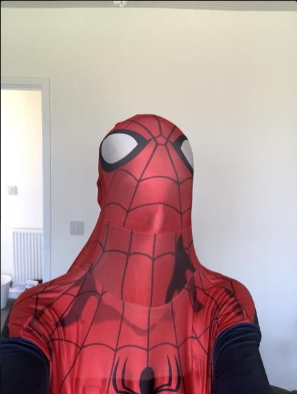
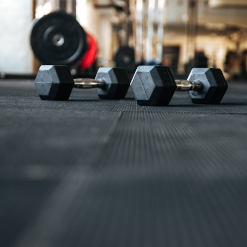

 I’ve always loved being creative and putting in the hard work, which is what drew me to being a chef in the first place. Now, I’m adding another layer by studying IT, and I’m really excited about it. It’s such an ever-changing field with endless possibilities, and I like the idea of combining my kitchen experience with the tech skills I’m picking up. It’s definitely a challenge, but I’m all about learning new things and seeing where it can take me.
 Fitness is also a big part of my life. Working out keeps me grounded and gives me the energy to take on everything else. Whether I’m lifting weights or experimenting with a new dish, I love pushing myself to improve and grow. It helps me stay focused, and I think it’s important to have that balance between personal wellness and chasing my career goals.
Looking ahead, I want to find ways to bring my different passions together. I can totally see myself using my IT skills to create something new in the food world, like an app to help restaurants or even something for home cooks. Music is another huge love of mine, and I’m excited to explore how tech can help me be more creative there too. Ultimately, I’m working toward a future where I get to do all the things I love, while staying inspired and always learning.